Designing games for optimal and unique experiences
Overview
Below is a summary of the game design work I've done the last few years, ranging from designing levels and features to combining game design with psychological theories of motivation for my graduation thesis. I work with the Unity game engine and C#.
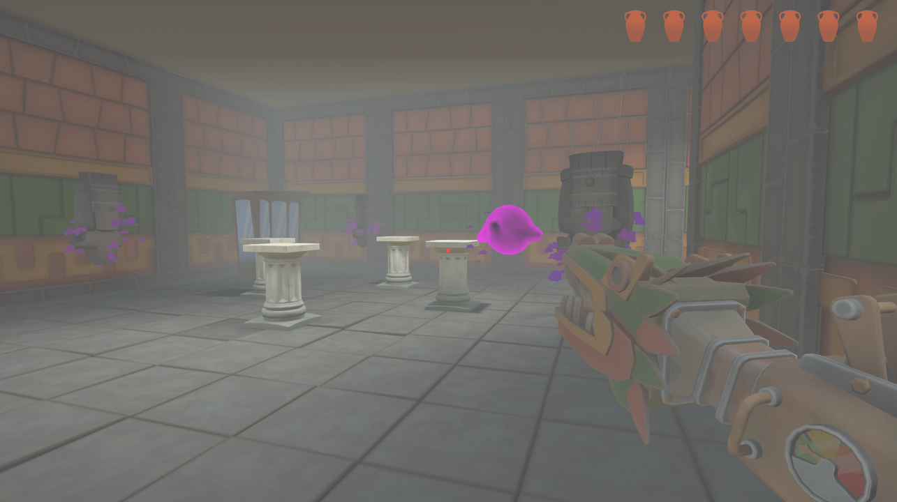
Museo Poseído (2024)
Museo Poseído is a first-person ghost-catching game developed as part of a team project. I contributed to the level design, art and overall game feel, conducting playtests to ensure the best possible experience within our time constraints. Below are layout images of the levels I worked on. To learn more, visit the Released Games page.
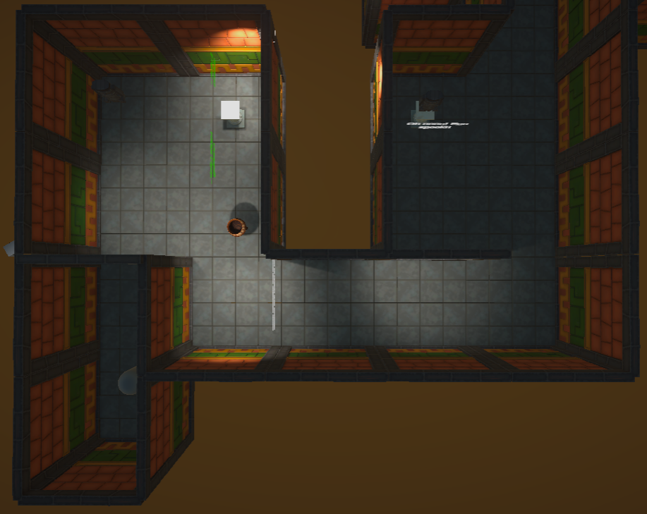
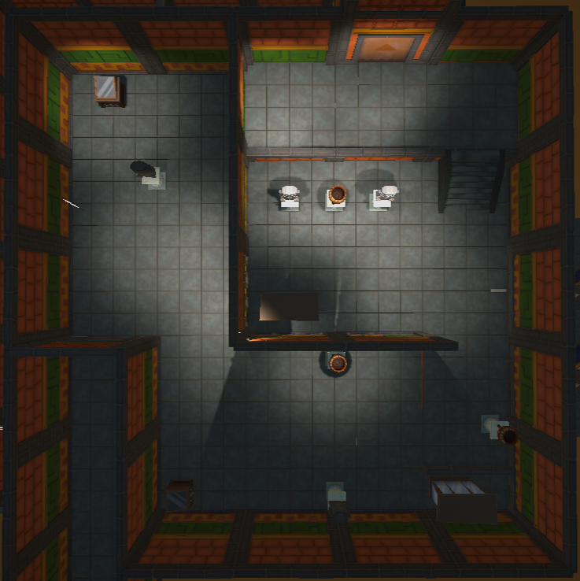
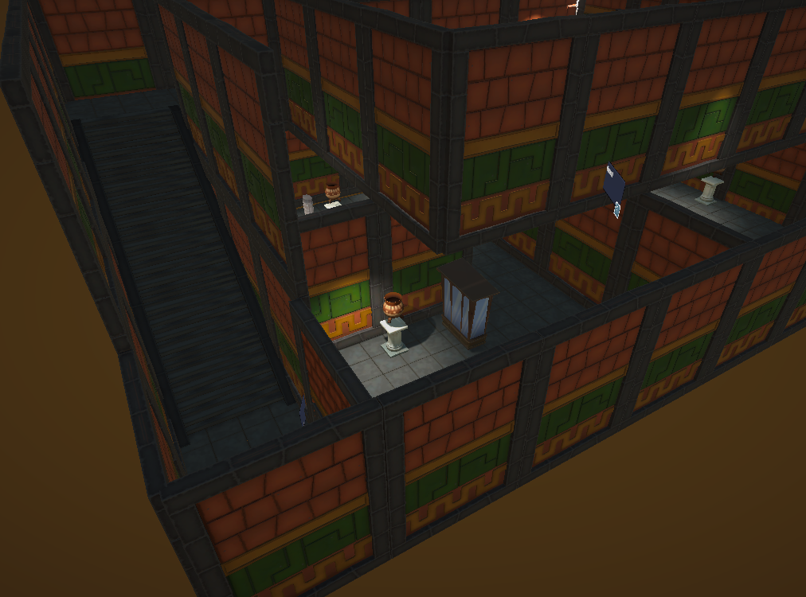
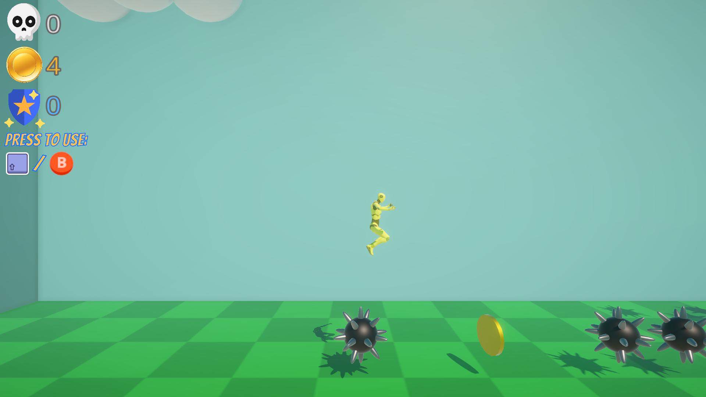
Thesis on player motivation (2025)
For my graduation project at DAE, I wrote a thesis exploring how psychological theories of motivation can be applied to game design and features. To investigate this, I created a rudimentary level where specific features would gradually activate based on player deaths. I tracked player progress, time spent, coins collected, and other metrics. Below, you can see a graph of the progress made by all participants with their amount of attempts, showing trends and sudden increases in progress influenced by the game mechanics.
After playing, participants completed a questionnaire, providing both quantitative and qualitative data. The results were very encouraging and underscored the value of psychological principles in game design. If you're interested in reading the full thesis, feel free to contact me directly. You can check out the game experiment on my Itch page.
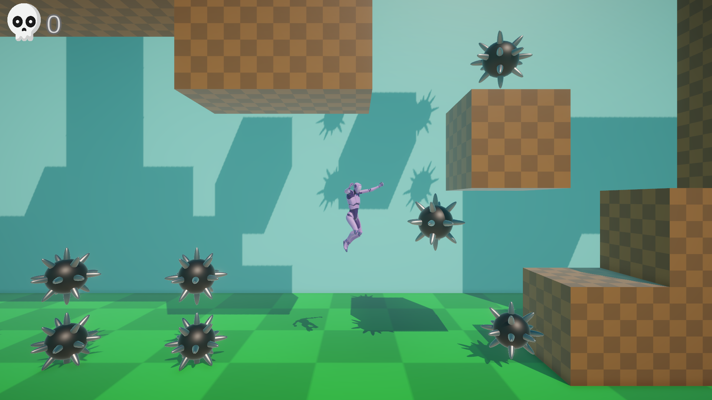
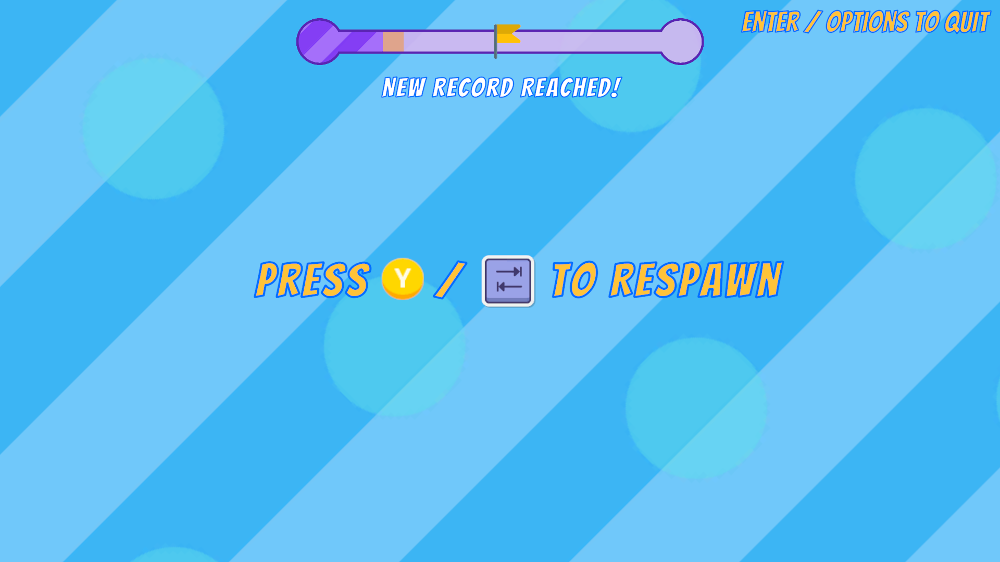
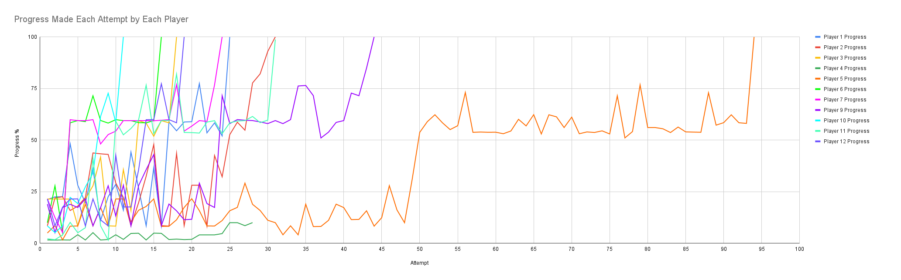

Axis Shift (2024)
In this prototype, the player can shift along the Z-axis, blending 2D and 3D platforming experiences. I designed this gameplay mechanic in Unity to explore my passion for both types of platformers, applying it across various scenarios to craft unique puzzles and challenges that are all rooted in the core mechanic as an exercise to practice my game design techniques.
You use this mechanic to impact the world around you to avoid obstacles to progress, but also to defeat enemies in your path, whilst gaining a different perspective depending on the 2D or 3D view. The prototype has more potential, but I'm currently not expanding on it any further. This prototype also served as the foundation for my game experiment conducted as part of my thesis research. You can check it out further on the Released Games page.
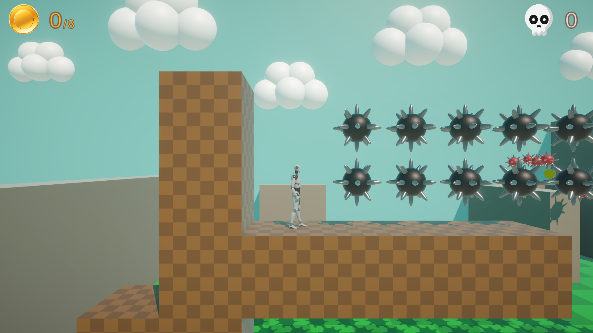
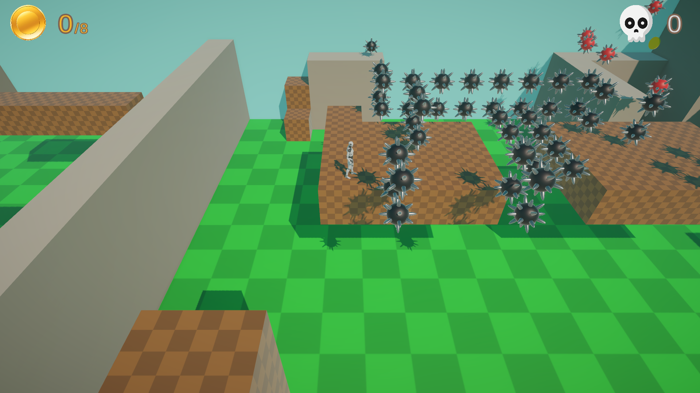
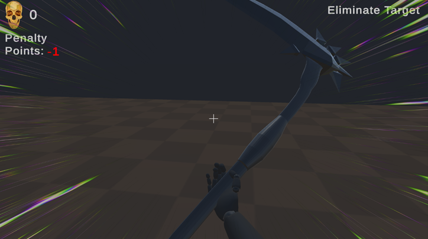
Death and the Misers (2023)
This Unity prototype explores the design of stealth mechanics. Inspired by the painting Death and the Miser by Jan Provoost and games like HITMAN, I developed a single level for a first-person stealth game featuring NPCs with detection logic, patrol paths, and optional collectibles for an added objective.
The player can swing a scythe, dash, and use X-ray vision to locate and eliminate a target. The objective is to infiltrate a compound and neutralize the target, ideally without any unnecessary casualties.
You can try the prototype on my Itch page, accessible at the bottom of the page, or through the Released Games page.
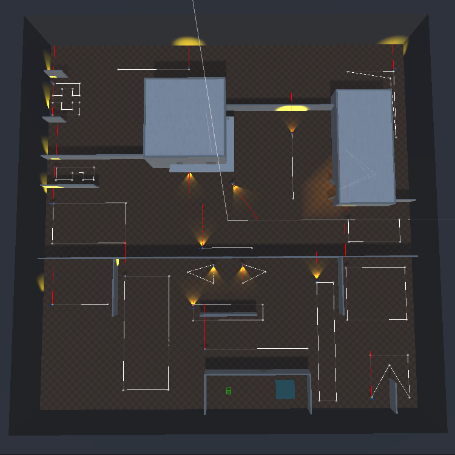
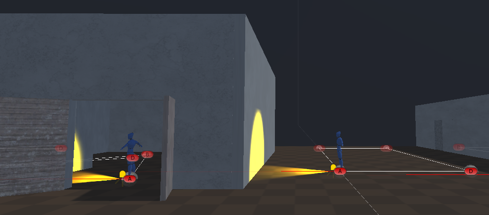
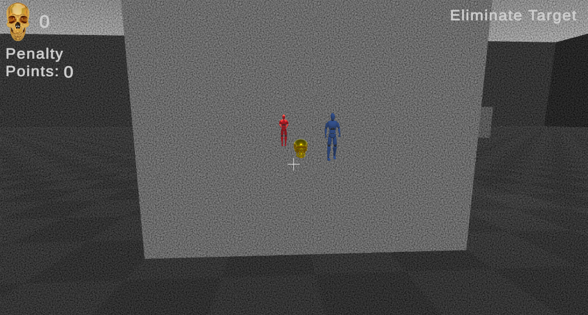
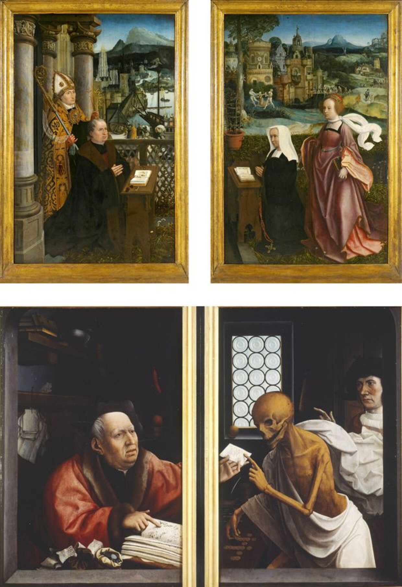
Let's Connect
Thanks for scrolling! If any of my work interested you, you'd like to discuss a project or just would like to discuss cool games, feel free to reach out on LinkedIn or via mail. You can check out my Itch and Github as well to see if I have published something recently!